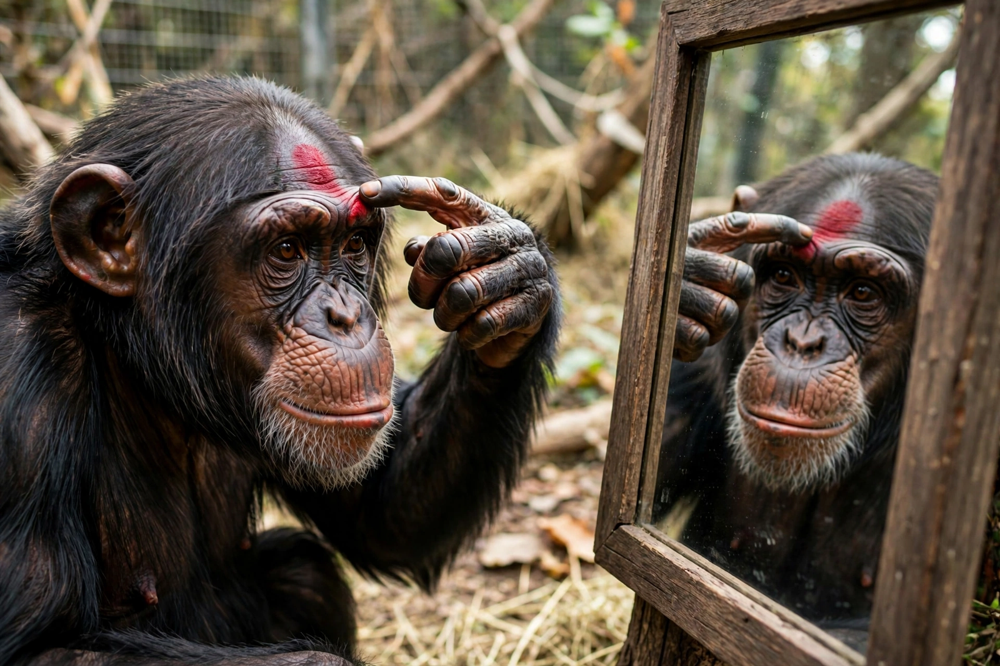

Gordon Gallup
From Wikipedia, the free encyclopedia

Gordon G. Gallup Jr. (born 1941) is an American psychologist who developed the mirror self-recognition test (1970) and is a founder of evolutionary psychology. His demonstration that chimpanzees — but not monkeys — recognise themselves in mirrors, passing a dye mark on their own foreheads, opened the scientific study of animal self-awareness and helped provoke modern research on animal consciousness.
The mirror test
Gallup's 1970 Science paper reported that after days of mirror exposure, chimpanzees used mirrors to inspect otherwise invisible parts of themselves, and touched anaesthesia-era dye marks placed on their faces — evidence, he argued, of a self-concept. The test became a benchmark in comparative psychology: great apes pass, most monkeys fail (though training studies complicate the line), and claimed passes by dolphins, elephants, magpies and cleaner fish keep the interpretation wars alive (self-recognition versus kinesthetic matching).
Evolutionary psychology
At the University at Albany, Gallup pioneered evolutionary approaches to human behaviour — from semen chemistry to the adaptive logic of self-awareness itself (he argued self-recognition enables mind-reading). His combative style and the field's controversies grew together; the mirror test remains his signature contribution, taught wherever animal minds are studied.